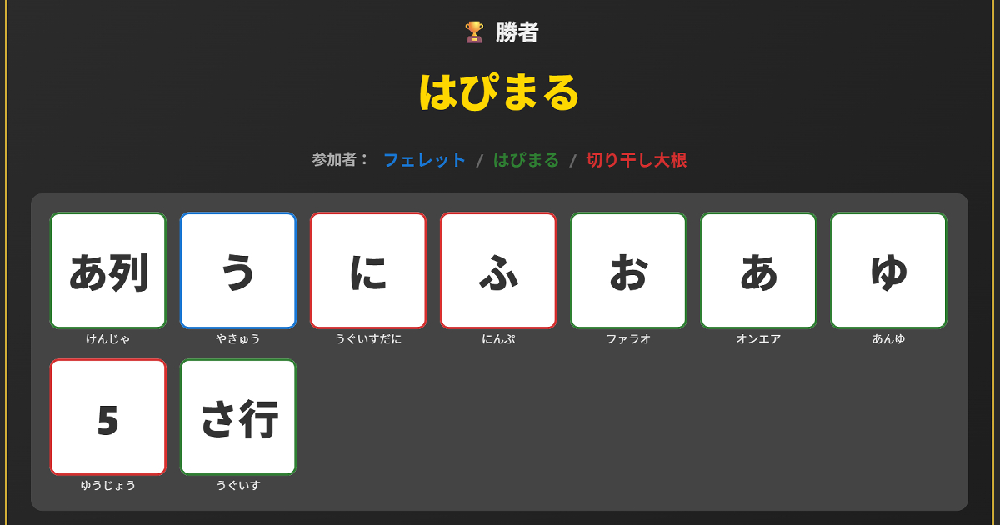

[26.4.17] このモードをもっと楽しむ！
～チェーンモード編～

MOCHICOTORI(モチコトリ)
⇗ ゲームはこちらからプレイできます
チェーンモードのルール
スピード勝負でしりとりします。ターン制じゃないから、自分の出したカードに自分で繋げてOK！最後のカードの最後の文字からはじめて、一緒に出すカードの文字や行／列で終わらせる。数字が書いてあるものは、その文字数なら末尾は何でもOK(7+は7文字以上)。
基本ルールは、3文字以上の単語で、できるだけ参加者みんなに通用する言葉を提出します。審査する側は知らない言葉が出てきたら容赦なくNGを押していいけど、条件に合った言葉が提出されてるかの審査は厳正にしてね。手札交換は、ゲーム中いつでも可能。ただし、自分の直前に手札交換したのが自分の場合はできない。
基本ルールに慣れてきたら、一般名詞縛りにしたり手札交換のタイミングは自由にして 1人何回まで/1ゲーム とか、ローカルで取り決めて遊ぶのもアリ！
似たゲームの紹介
ワードバスケット
チェーンモードとの違い：あ～お列がないこと、手札交換ルールがない代わりにリセットルールがあること、リーチ宣言や上がり縛りがあること
公式。味のあるパッケージで一度手に取ってみたくなるね。しりとりなのにターン制じゃないところが斬新で、考えてる途中にカードを出されると、また別の文字で考え直さなきゃいけない！となる忙しいゲーム。ひらめきの連続で、一気に手札を出し切れたときは爽快だ。チェーンモードではオンラインで遊ぶ性質上、カードが出るたび審査しなきゃいけなくなってるけど、この辺りがアナログでは直感的で、間違ってるときだけ指摘すればいいから遊びやすい。[PR]アマゾン

ワードバスケット 日本語版
「しりとり」がカードゲームになりました。しりとりといっても子供ゲームではありません。 箱の中にあるカードの文字ではじまり、自分の持っているカードの文字で終わる3文字以上の 言葉を考え、思いついたらその言葉を言いながら該当するカードを箱の中に投げ入れます。 その瞬間からすべてのプレーヤーは新しい箱の中の文字ではじまり自分の持っているカードで 終わる言葉を考えるのです。このゲームには順番はありません。思いついたらどんどん言葉を 言ってカードを箱に投げ入れます。最初に手札をすべてなくしたプレーヤーの勝ちです。 ボキャブラリーを試されるゲームです。 子供には、使える言葉を2文字以上にすれば子供と一緒に遊ぶこともできます。
[PR] Amazon.co.jpで見るあいうえおレース
チェーンモードとの違い：行／列ワイルドカードがないかわりに「を」、「ん」という特殊カードがあること、場のカードから色か文字数を採用すること
しりとりとはちょっと違うけど、チェーンモードやワードバスケットとよく似たタイプのゲーム。色か文字数を場のカードに合わせて、手札の文字で始まる言葉を思いついた人から出していく。なんとこれがDAISOで¥110で売っていた。
チェーンモードをもっと楽しむ！
アイデア集
ルールにも書いた一般名詞縛りや手札交換1人何回まで/1ゲームというアイデアの他、
・テーマ縛りや文章可のおもしろ縛り(大喜利)
・直前に出した人だけ手札交換できない(他の人は何度でも自由にできる)
・しりとりとは逆の「あたまとり」でやってみる
・文章可でストーリーを繋げていく
などなど。他にも面白いアイデア💡があったらぜひ教えてくださいね( ｀ー´)ノ